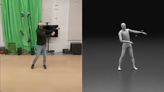

Interactividad
Interactividad es el grado en que el entorno virtual responde en tiempo real a los cambios del entorno físico y sus objetos (Steuer, 1992; Blooma et al. 2022). También supone que ambos entornos, físico y virtual, están sincronizados (Speicher et al., 2019). Se puede definir como el grado en que los estudiantes pueden interactuar con artefactos (incluyendo representaciones virtuales de ellos mismos/as) que sean parte de ambos entornos simultáneamente. Este aspecto distingue MR de otras tecnologías XR.
En la imagen se muestra la representación virtual de la persona desalineada con el movimiento de la persona. Este aspecto no se limita al cuerpo humano, sino también incluye objetos físicos integrados (ej. instrumentos musicales).